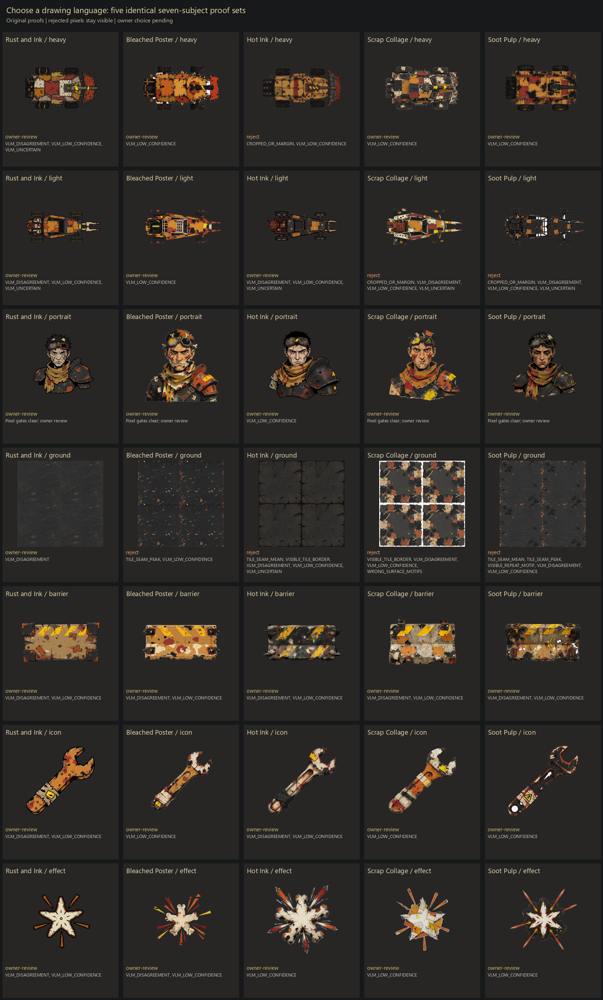
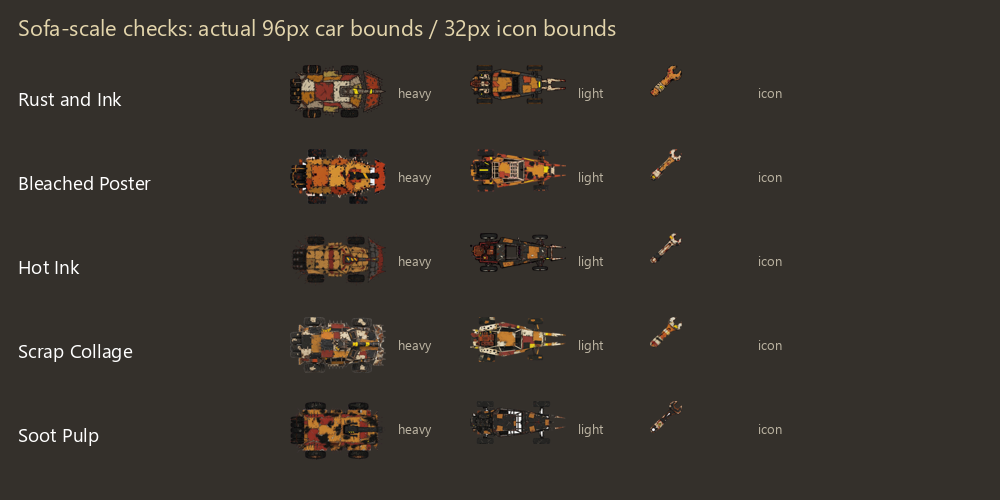
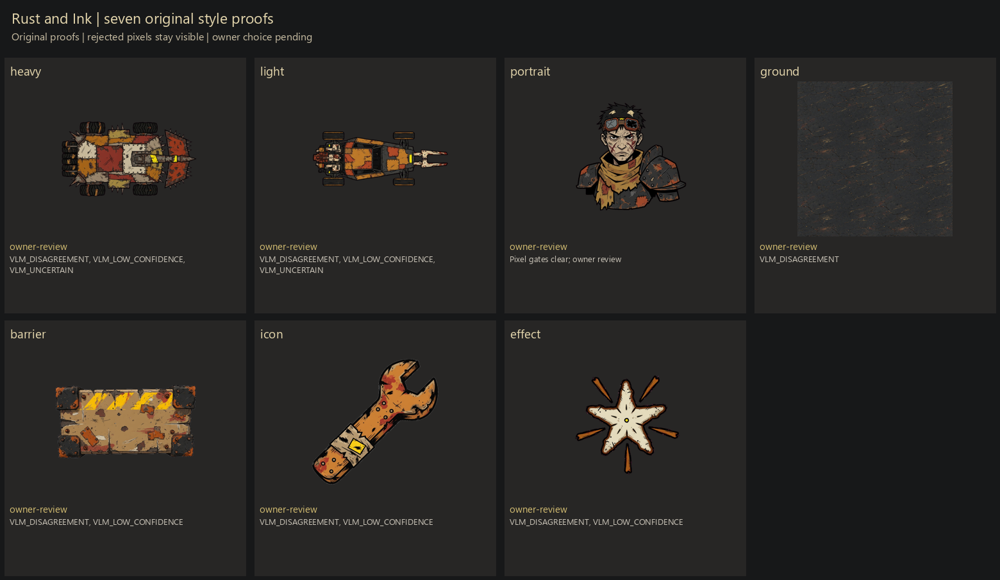
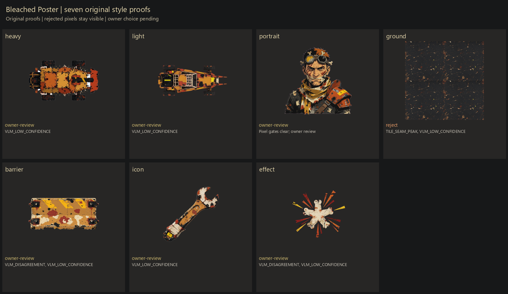
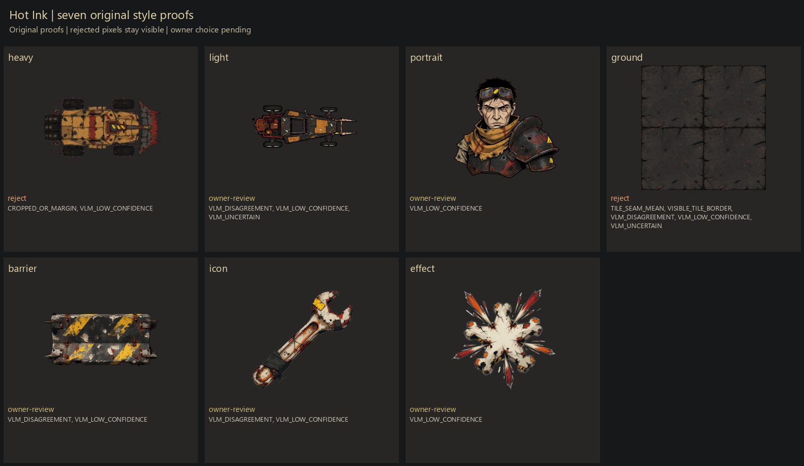
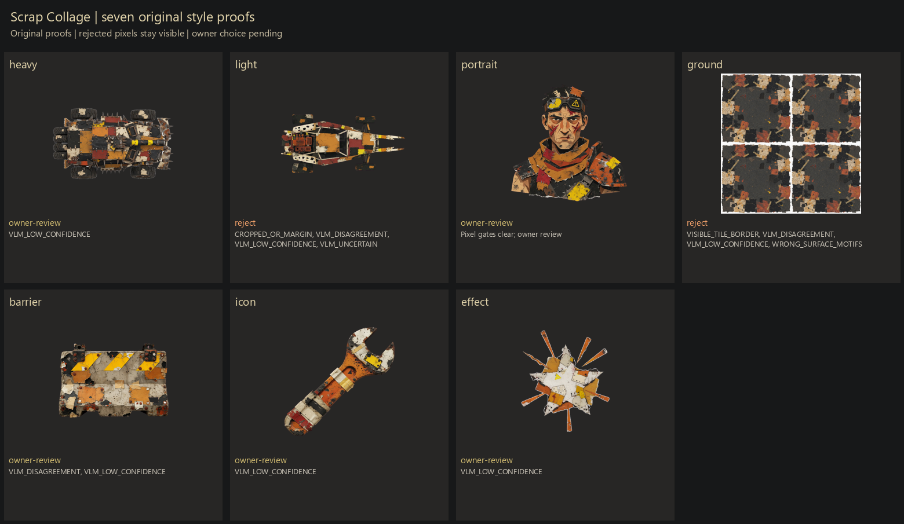
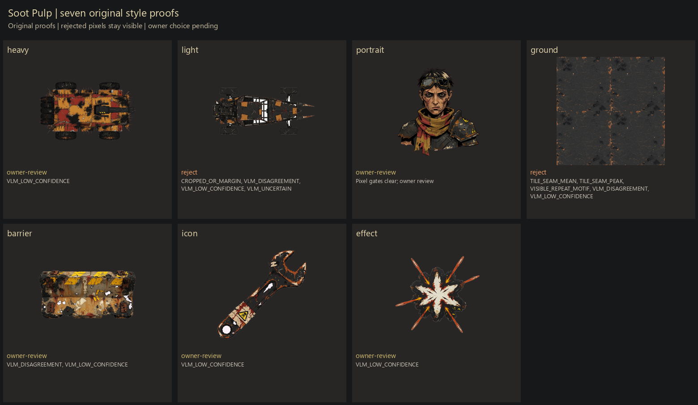

DEATH RIDE / ART DIRECTION V2 / OWNER REVIEW
Five ways to make the wasteland.
Compare the same heavy, light, rival, ground, barricade, repair icon and spark burst across five drawing languages. These are original style proofs, not production-ready selections.
Owner choice pending. V2's ten cars and six portraits, and V4's world kit, wait for deathride/art/OWNER-CHOICE.md. Damage states and liveries require a separate exact-reference approval. No approval file has been created by this run.
V1 spend: 68 images. Weekly ledger: 198/350; 152 remaining; zero videos. Failed attempts remain charged and visible. Local models route or reject; human calibration and owner taste remain pending.
Compare by subject

Ground cells show actual 2×2 repeats of 256px exports. Source margins are measured before extraction. A passing number does not erase a visible motif or border. Cars and icons below are shown at actual display bounds.

Rust and Ink
Strongest silhouette and simplest moving read; scratches may disappear at sofa scale.
v1 versus v2 board · Full style card

Gate codes and direct observations
| Subject | Verdict | Codes | Observed pixels |
|---|
heavy
source / preview | owner-review | HUMAN_CALIBRATION_PENDING, VLM_DISAGREEMENT, VLM_LOW_CONFIDENCE, VLM_UNCERTAIN | Broad overhead plated wagon with jagged ram and scratch contours; cropped predecessors were not accepted. |
light
source / preview | owner-review | HUMAN_CALIBRATION_PENDING, VLM_DISAGREEMENT, VLM_LOW_CONFIDENCE, VLM_UNCERTAIN | Narrow roof-plane buggy with rear engine, empty cage and two fork prongs; extreme proportions distinguish it from the heavy. |
portrait
source / preview | owner-review | HUMAN_CALIBRATION_PENDING, OWNER_ACCEPTANCE_PENDING | Contained gaunt bust, goggles, scarf and shoulder plate; angular black contour and coarse paint fills. |
ground
source / preview | owner-review | HUMAN_CALIBRATION_PENDING, VLM_DISAGREEMENT | Dark anonymous field with fine warm cracks; numeric gates clear but diagonal crack clusters can still repeat visibly. |
barrier
source / preview | owner-review | HUMAN_CALIBRATION_PENDING, VLM_DISAGREEMENT, VLM_LOW_CONFIDENCE | Top-plane concrete rectangle, yellow diagonal bands, bolted end caps and a continuous ink edge. |
icon
source / preview | owner-review | HUMAN_CALIBRATION_PENDING, VLM_DISAGREEMENT, VLM_LOW_CONFIDENCE | Single diagonal wrench with a large dark outline and chipped warm fill; small caution-like geometric mark needs owner scrutiny. |
effect
source / preview | owner-review | HUMAN_CALIBRATION_PENDING, VLM_DISAGREEMENT, VLM_LOW_CONFIDENCE | Final exported sprite preserves the complete pale star centre and short orange rays. Magenta-source correction removed the pale-background keying ambiguity; predecessor lost its centre fill. |
Bleached Poster
Graphic economy and pale heat; must remain a vehicle rather than an emblem.
v1 versus v2 board · Full style card

Gate codes and direct observations
| Subject | Verdict | Codes | Observed pixels |
|---|
heavy
source / preview | owner-review | HUMAN_CALIBRATION_PENDING, VLM_LOW_CONFIDENCE | Overhead block-like orange wagon, restrained seams and large flat panels; source side-view attempt rejected. |
light
source / preview | owner-review | HUMAN_CALIBRATION_PENDING, VLM_LOW_CONFIDENCE | Final roof-plane buggy has rectangular tyres and open cage; more graphic panel masses than brush ink. |
portrait
source / preview | owner-review | HUMAN_CALIBRATION_PENDING, OWNER_ACCEPTANCE_PENDING | Angular shaded face with simplified orange-bone blocks and scarf; portrait has more tonal detail than a literal six-ink print. |
ground
source / preview | reject | HUMAN_CALIBRATION_PENDING, TILE_SEAM_PEAK, VLM_LOW_CONFIDENCE | Tiny ochre flecks on charcoal, isolated bright edge fragments; seam peak still fails. |
barrier
source / preview | owner-review | HUMAN_CALIBRATION_PENDING, VLM_DISAGREEMENT, VLM_LOW_CONFIDENCE | Hard-edged long block, broad flat ochre patches and yellow bands; sparse carved-looking chips. |
icon
source / preview | owner-review | HUMAN_CALIBRATION_PENDING, VLM_LOW_CONFIDENCE | Final single-jaw wrench has a blunt wrapped handle, hard flat bone/rust blocks and broad chips; rejected double-ended predecessor retained. |
effect
source / preview | owner-review | HUMAN_CALIBRATION_PENDING, VLM_DISAGREEMENT, VLM_LOW_CONFIDENCE | Contained pale star and short ochre rays; large disc/checkerboard failure from attempt one is gone. |
Hot Ink
Most kinetic outlines; monitor tiny spatter and action marks becoming detached noise.
v1 versus v2 board · Full style card

Gate codes and direct observations
| Subject | Verdict | Codes | Observed pixels |
|---|
heavy
source / preview | reject | CROPPED_OR_MARGIN, HUMAN_CALIBRATION_PENDING, VLM_LOW_CONFIDENCE | Overhead spiked wagon with sweeping tapered contour; latest source still too close to border at the three-attempt cap. |
light
source / preview | owner-review | HUMAN_CALIBRATION_PENDING, VLM_DISAGREEMENT, VLM_LOW_CONFIDENCE, VLM_UNCERTAIN | Sharp narrow cage-and-fork shape, heavy blacks and short warm panels; orientation is horizontal overhead. |
portrait
source / preview | owner-review | HUMAN_CALIBRATION_PENDING, VLM_LOW_CONFIDENCE | Contained square-shouldered bust, angular tired face and stronger tapered strokes; scarf and shoulder remain distinct. |
ground
source / preview | reject | HUMAN_CALIBRATION_PENDING, TILE_SEAM_MEAN, VISIBLE_TILE_BORDER, VLM_DISAGREEMENT, VLM_LOW_CONFIDENCE, VLM_UNCERTAIN | A square perimeter crack encloses the patch; visible tile frame remains despite revisions and fails the repeat intent. |
barrier
source / preview | owner-review | HUMAN_CALIBRATION_PENDING, VLM_DISAGREEMENT, VLM_LOW_CONFIDENCE | Chipped alternating hazard bands, spiked ends and sharper contour; source margin correction is visible. |
icon
source / preview | owner-review | HUMAN_CALIBRATION_PENDING, VLM_DISAGREEMENT, VLM_LOW_CONFIDENCE | Slim diagonal wrench with tapered contour and wrapped dark handle, readable jaw. |
effect
source / preview | owner-review | HUMAN_CALIBRATION_PENDING, VLM_LOW_CONFIDENCE | Central star, sharp long and short rays and limited spatter; brightest, most directional burst. |
Scrap Collage
Patchwork identity and tactile planes; dense panels must survive downsampling.
v1 versus v2 board · Full style card

Gate codes and direct observations
| Subject | Verdict | Codes | Observed pixels |
|---|
heavy
source / preview | owner-review | HUMAN_CALIBRATION_PENDING, VLM_LOW_CONFIDENCE | Overhead patchwork wagon with pale cut scraps, black joins and irregular panel overlaps; denser than Poster. |
light
source / preview | reject | CROPPED_OR_MARGIN, HUMAN_CALIBRATION_PENDING, VLM_DISAGREEMENT, VLM_LOW_CONFIDENCE, VLM_UNCERTAIN | Final overhead patched buggy preserves rectangular tyre tops and forked right nose; still fails source margin at the three-attempt cap. Do not promote this reference. |
portrait
source / preview | owner-review | HUMAN_CALIBRATION_PENDING, OWNER_ACCEPTANCE_PENDING | Angular patchwork face and layered shoulder scraps with blunt cut edges, recognisably assembled. |
ground
source / preview | reject | HUMAN_CALIBRATION_PENDING, VISIBLE_TILE_BORDER, VLM_DISAGREEMENT, VLM_LOW_CONFIDENCE, WRONG_SURFACE_MOTIFS | Explicit white border and large taped/patchwork motifs; unacceptable as seamless anonymous asphalt even though numeric gates miss the border. |
barrier
source / preview | owner-review | HUMAN_CALIBRATION_PENDING, VLM_DISAGREEMENT, VLM_LOW_CONFIDENCE | Irregular concrete block with paper-like chips and overlapping hazard strips; no continuous thick ink border. |
icon
source / preview | owner-review | HUMAN_CALIBRATION_PENDING, VLM_LOW_CONFIDENCE | Final single-jaw wrench has a closed taped grip and visibly layered torn colour panels; rejected double-ended predecessor retained. |
effect
source / preview | owner-review | HUMAN_CALIBRATION_PENDING, VLM_LOW_CONFIDENCE | Angular cut-paper star and orange strips; fragments retain broad flat panels. |
Soot Pulp
Darkest shape language with bone cutouts; neutral lighting and ground contrast need care.
v1 versus v2 board · Full style card

Gate codes and direct observations
| Subject | Verdict | Codes | Observed pixels |
|---|
heavy
source / preview | owner-review | HUMAN_CALIBRATION_PENDING, VLM_LOW_CONFIDENCE | Dark masses around warm roof plates; less severe and more colourful than the card requested, still a distinguishable low-detail heavy. |
light
source / preview | reject | CROPPED_OR_MARGIN, HUMAN_CALIBRATION_PENDING, VLM_DISAGREEMENT, VLM_LOW_CONFIDENCE, VLM_UNCERTAIN | Dark skeletal plan-view frame and thin prongs; latest source misses margin gate at its three-attempt cap. |
portrait
source / preview | owner-review | HUMAN_CALIBRATION_PENDING, OWNER_ACCEPTANCE_PENDING | Dark cropped bust with restrained bone facial planes, scarf and sloping armour; strongest menacing facial contrast. |
ground
source / preview | reject | HUMAN_CALIBRATION_PENDING, TILE_SEAM_MEAN, TILE_SEAM_PEAK, VISIBLE_REPEAT_MOTIF, VLM_DISAGREEMENT, VLM_LOW_CONFIDENCE | Dark cracked field with a broad light top-right patch; repeating patch and seam mismatch remain. |
barrier
source / preview | owner-review | HUMAN_CALIBRATION_PENDING, VLM_DISAGREEMENT, VLM_LOW_CONFIDENCE | Dark soot-rich block with chipped yellow hazard band; clustered black wear dominates the ends. |
icon
source / preview | owner-review | HUMAN_CALIBRATION_PENDING, VLM_LOW_CONFIDENCE | Heavy black wrench silhouette, thin bone edge chips and warm rust scuffs; good small read. |
effect
source / preview | owner-review | HUMAN_CALIBRATION_PENDING, VLM_LOW_CONFIDENCE | Black-rimmed pale star with sparse orange spikes; strongest dark-to-light cutout. |